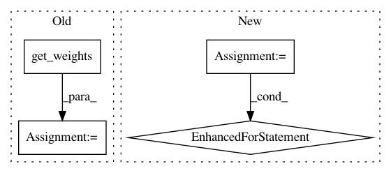

d33c114816429c494e2a40625849d57ae2103f3f,softlearning/algorithms/sac.py,SAC,_update_target,#SAC#,399
Before Change
def _update_target(self):
source_params = self._V.get_weights()
target_params = self._V_target.get_weights()
self._V_target.set_weights([
(1 - self._tau) * target + self._tau * source
for target, source in zip(target_params, source_params)
After Change
self._update_target()
def _update_target(self):
for Q, Q_target in zip(self._Qs, self._Q_targets):
source_params = Q.get_weights()
target_params = Q_target.get_weights()
Q_target.set_weights([
(1 - self._tau) * target + self._tau * source
for target, source in zip(target_params, source_params)
])
def _do_training(self, iteration, batch):
Runs the operations for updating training and target ops.
feed_dict = self._get_feed_dict(iteration, batch)
In pattern: SUPERPATTERN
Frequency: 4
Non-data size: 4
Instances
Project Name: rail-berkeley/softlearning
Commit Name: d33c114816429c494e2a40625849d57ae2103f3f
Time: 2018-11-22
Author: hartikainen@berkeley.edu
File Name: softlearning/algorithms/sac.py
Class Name: SAC
Method Name: _update_target
Project Name: keras-team/autokeras
Commit Name: 1cda66554188c4504aa94d1bcffd4cef9ee8a997
Time: 2017-12-28
Author: jhfjhfj1@gmail.com
File Name: autokeras/layer_transformer.py
Class Name:
Method Name: conv_to_wider_layer
Project Name: rail-berkeley/softlearning
Commit Name: d35509ef4fed2e588adb9285ee1c9bd0eb16582a
Time: 2019-02-01
Author: hartikainen@berkeley.edu
File Name: softlearning/algorithms/sql.py
Class Name: SQL
Method Name: _update_target